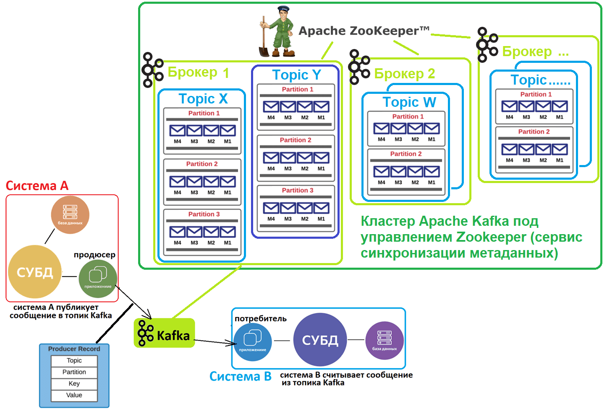
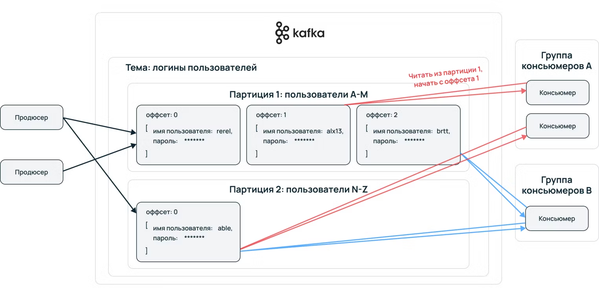

В каждом более менее развитом проекте наступает момент, когда для эффективного масштабирования системы мало классической архитектуры «клиент-сервер-БД». Тогда между сервером и БД добавляют новый компонент — брокер сообщений, который позволяет привнести асинхронность в бэк.
Тестеру важно уметь проводить интеграционное тестирование, и часто рядом с интеграционным тестированием стоит умение заглянуть в брокер сообщений. В этом уроке также посмотрим много примеров интеграционного тестирования.
С теорией будешь знакомиться в следующем модуле, пока для понимания будет достаточно того, что тестирование интеграций — это тестирование общения компонентов на разных уровнях, например, сервис с сервисом через REST API (или gRPC), сервис с базой данных (через SQL), фронт с сервисом (REST API, WebSocket), сервис с кафкой (сообщения), внешние интеграции (внешнее API) и так далее.
Отдельный сервис, выполняющий функцию посредника в общении между компонентами. Обеспечивает асинхронное общение (компонент может обратиться к сообщению позже), доставку сообщений, иногда на брокерах реализуется бэковая валидация (дабы не нагружать сервера) и маршрутизация (что-то вроде внутреннего API-шлюза).
Основные субъекты брокеров:
Два самых популярных брокера: Kafka и RabbitMQ. Будем делать упор в кафку, но также посмотрим оба в сравнении.
Kafka:
– «Ленивый» брокер, подписчики сами забирают (пуллят, pull) сообщения
– Время хранения сообщений задается вручную при настройке кафки (это делает девопс), сообщения можно перечитывать повторно
– Выдерживает высокие нагрузки, 1-2 млн сообщений в секунду
– Сложно развернуть в проекте, для высоконагруженных систем
RabbitMQ:
– «Умный» брокер: сам отправляет (пушит, push) сообщения подписчикам
– Сообщения удаляются сразу после прочтения
– Небольшие нагрузки, 10-40 тыс сообщений в секунду
– Легко развернуть в проекте, есть много инструментов «из коробки», эффективен на слабонагруженных системах
– Гибкая маршрутизация
На собесе иногда попросят рассказать, через что ты тестил кафку. Так как кафка сама по себе сервис, для комфортного взаимодействия с ней необходим GUI клиент. В видео выше использовался клиент Kowl, почитай в статье ниже какие клиенты есть и позже выбери себе в легенду. На собесах мало кто копает в это и тем более просит продемонстрировать, но уверенный ответ сильно выделит тебя. Еще подсвети проблемы с разворачиванием на проекте, занимательные истории можно найти на форумах типа stackoverflow.
⚠️ Kowl в легенду не брать, так как с 2022 не обслуживают кафку.
P.S. Также есть неупомянутый клиент Offset Explorer, можешь тоже погуглить.

Вложенность сущностей кафки следующая:
– Экосистема Kafka (кластер Kafka и Zookeeper)
– Кластер Kafka
– Брокер (сервер)
– Топик (тема)
– Партиция (деление на потоки внутри темы)
– Оффсет (порядковый номер сообщения, начиная с 0) и само сообщение

Видеопримеры тестирования через кафку: